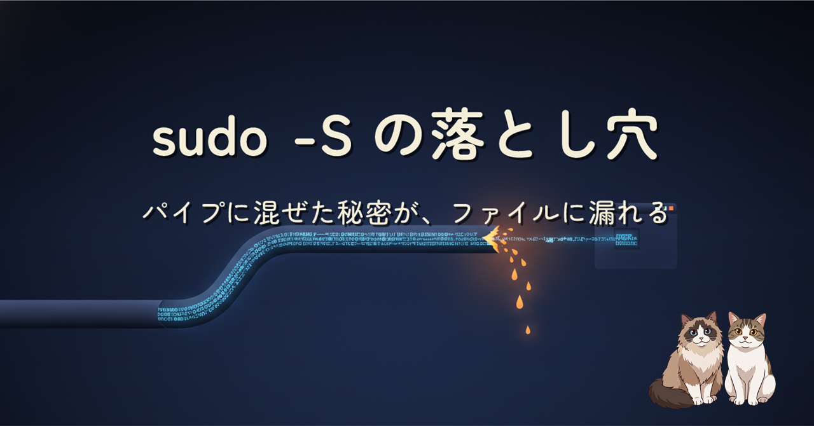
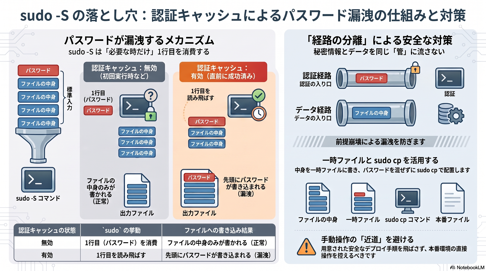
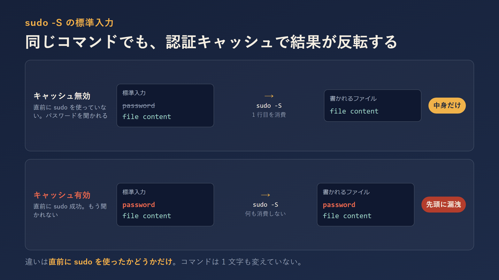
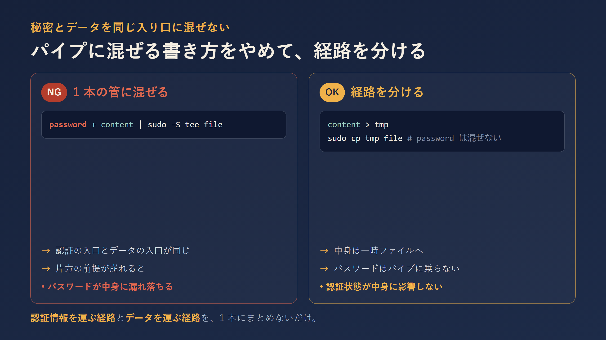

パスワードとファイルの中身を同じ標準入力に混ぜて sudo -S に渡すと、認証キャッシュが効いている時に 1 行目のパスワードが消費されず、公開ファイルにそのまま書き込まれて外部露出することがあります。実際にやってしまった事故から、なぜ起きるのか（sudo -S の挙動と認証キャッシュ）と、一時ファイル + sudo cp で経路を分ける直し方までをまとめました。
静的ファイルが認証なしで配信されること自体は、ブラウザアプリでは普通のことで脆弱性ではありません。今回の事故は「その公開される場所へ、秘密を書き込んでしまった」ことが本質でした。引き金は sudo -S の一行で、認証情報を運ぶ経路とデータを運ぶ経路を 1 本のパイプにまとめたこと。だから対策も「経路を分けるだけ」で足ります。



sudo cp で経路を分ける書き方（OK）。